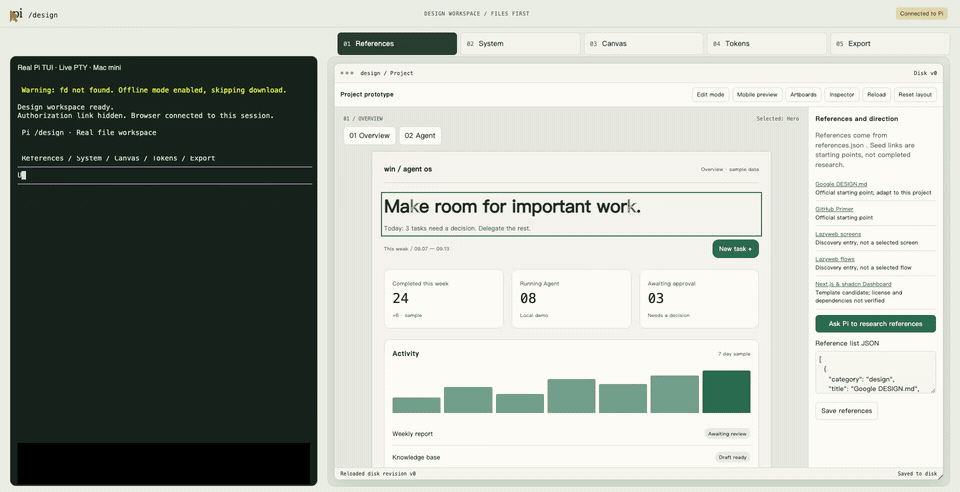
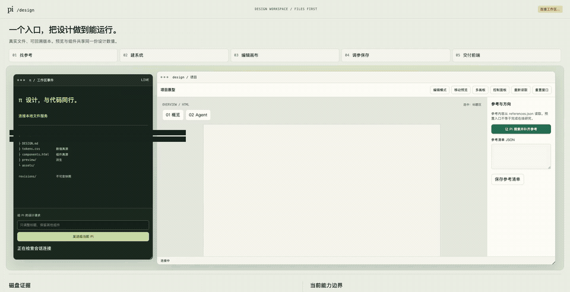

Two sources. No drift.
tokens.css owns design values. components.html owns component design. Documentation and previews follow them.
A LOCAL WORKSPACE FOR PI
Shape an interface without losing its source. Edit real tokens and components. Keep each revision. Take the HTML with you.
Watch the real UI ↓Open source · MIT · Local first
pi install npm:pi-design-mode@0.3.1English UI: PI_DESIGN_LANGUAGE=en pi → /design. macOS · Node.js 22+ · tested with Pi 0.85.1.


Full-length inline GIFs · 960px · 8 fps. Reduced-motion preference shows still images; original HD recordings below.
Recorded in English: real Pi TUI on the left, HTML on the right, including actual inspect/apply calls. No title cards or subtitles. Private details are masked. The approved Chinese original remains available.
tokens.css owns design values. components.html owns component design. Documentation and previews follow them.
Preview drafts, lock a title, undo changes and restore a version. Conflict checks protect against accidental overwrites.
Take away interactive HTML/CSS/JS with an integrity receipt. No deployment required. A framework build is a separate step.
CLEAR BOUNDARIES
A focused prototype editor, not arbitrary HTML editing. Business figures are samples. Chat is a local echo, not a production agent. No automatic deployment or custom telemetry.
Permissions & security ↗